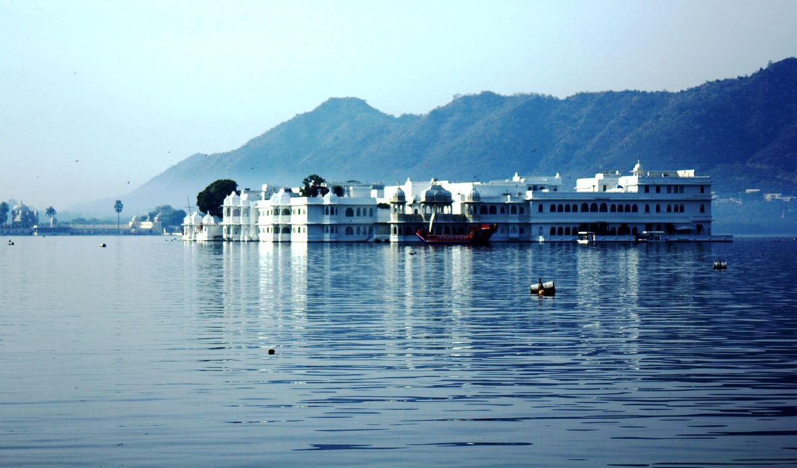

Lake Pichola
The Lake Palace in Udaipur is located on the Jag Niwas Island on a sprawling 1.5-hectare land. This magnificent structure was built on the Lake Pichola by Maharana Jagat Singh in 1734. Once a summer palace for the royalty of Udaipur, it has now been converted into a heritage hotel.
Still retaining the grandeur, it resembles a fairy tale kingdom. Enhancing the magical aura are the rippling waves and the beautiful sunset. The intricate craftsmanship and aesthetic handicrafts and textiles add to the beauty this place. The elegant white marble palace is a fantasy as it arises softly from the blue waters. 4 acres of rock have been used to lay the foundation of this palace and was known as Jag Niwas after its founder.
The palace highlights include fountains, gardens, pillared terraces, painted mirrors, pink stone work, lotus leaves and cusped arches. Dhola Mahal, Bada Mahal, Phool Mahal, Ajjan Niwas and Kush Mahal are some of the apartments in here.
There are various facilities available in the palace for the guests like the swimming pool, bar, restaurants, café and conference hall. There is also a 24-hour business center and 8 meeting rooms with fully updated equipment for corporate meetings and conferences. In here are 12 banquet halls for cocktail parties, wedding and other related functions.
Lake Pichola, situated in Udaipur city in the Indian state of Rajasthan, is an artificial fresh water lake, created in the year 1362 AD, named after the nearby Picholi village.It is one of the several contiguous lakes, and developed over the last few centuries in and around the famous Udaipur city. The lakes around Udaipur were primarily created by building dams to meet the drinking water and irrigation needs of the city and its neighborhood. Two islands, Jag Niwas and Jag Mandir are located within Pichola Lake, and have been developed with several palaces to provide views of the lake
There are four islands on the lake:
- Jag Niwas, where the Lake Palace is built.
- Jag Mandir, with the palace of the same name.
- Mohan Mandir, from where the king would watch the annual Gangaur festival celebration.
- Arsi Vilas, small island which was an ammunition depot, but also a small palace. This one was built by one of the maharanas of Udaipur to enjoy the sunset on the lake. It is also a sanctuary catering to a variety of birds, including tufted ducks, coots, egrets, terns, cormorants and kingfishers.
Access
The Lake Pichola is approachable by road from the Udaipur City. Local buses, Tongas, auto-rickshaws and taxis provide the needed transport. Udaipur, in turn, is well connected through the Golden Quadrilateral road network, and it lies equidistant, at 650 kilometres, from Delhi and Mumbai on the National Highway (NH) 8. Jaipur, the capital of Rajasthan is 6 hours by road and 3.5 hours drive from Ahmedabad to Udaipur. Rajasthan Tourism operates regular bus service from Delhi. It also falls on the East West Corridor which starts from Porbandar and ends at Silchar and intersects the Golden Quadrilateral and a part of this is the stretch from Udaipur to Chittor. 24 km from the lake is the Dabok Airport which connects to Delhi and Bombay. Udaipur Railway Station and Maharana Pratap Bus Stand are both 3 km away from the Lake.
History
Pichola Lake was built in 1362 AD by Banjara, a gypsy "Banjara" tribesman who transported grain, during the reign of Maharana Lakha. Later, Maharana Udai Singh, impressed by the charm of this lake with the backdrop of green hills, founded the city of Udaipur on the banks of the lake and also enlarged the Lake by constructing a stone masonry dam in the Badipol region on the shore of the Lake.
The lake’s surroundings and the several islands within the lake have been developed over the centuries, with palaces, marble temples, family mansions, bathing ghats or chabutaras (a raised platform, normally within a courtyard); some of the famous ones are the Lake Palace (now converted into a heritage hotel) in the middle of the lake also called the Pichola Palace (pictured) or Jag Nivas located on the Jag Island, the Jag Mandir, the Mohan Mandir (in the northeast corner of the lake built by Jagat Singh between 1628 and 1652), the City Palace [7] of Udaipur (Bansi Ghat) from where boats ply to all other parts of the Lake, the Arsi Vilas Island, which is a sanctuary for birds and the Sitamata Game Sanctuary on the western shore of the Lake.
At several locations where the lake narrows, ornamental arch bridges have been built to span the waterway between the banks.
Prince Khurram who rebelled against Jahangir, sought refuge of the Mewar King Maharana Karan Singh II in 1623 and was housed in the partially completed Jag Mandir. Prince Khurram later usurped the Mughal Empire, took the title of Shah Jahan.
Hydrology and technical details
The Sisarma stream, a tributary of the Kotra River, drains a catchment of 55 km2 from the Aravalli Mountains and contributes to the flows in the lake.The average annual rainfall in the lake basin is 635 millimetres (25.0 in). The lake has a surface area of about 696 ha. It is 4 kilometres (2.5 mi) long and 3 kilometres (1.9 mi) wide, and has depth varying from a minimum of 4.32 metres (14.2 ft) to a maximum of 8.5 metres (28 ft). In the heart of the Lake, a palace called the Lake Palace was built, which is now converted into a heritage palace hotel. This palace built in marble in 1746 by Maharana Jagat Singh II, 62nd successor to the royal dynasty of Mewar, spreads across the 1.6 ha (4 acres) island and is claimed to be as impressive as the Taj Mahal. At the southern end, a dam was built across the major tributary to facilitate the Banjara tribesman to ford the stream with animals carrying grains. After 1560, Maharana Udai Sing II strengthened the dam (to a height of 15.24 m) when he established the city of Udaipur around the picturesque Lake. Machchala Magra hill, to the south of the city palace complex, is part of the old city wall and the small fort of Eklinggarh and the temple.The fact that the Pichola lake was built by nomadic gypsies testifies that the rulers of Mewar encouraged people to build water harvesting structures.
Water quality
According to a study carried out by the "Centre of Advanced Study in Geology", Punjab University, the water quality of the lake has a high sodium and Bicarbonate content, which is attributed to the continental weathering due to anthropogenic pressure (tourist influx), intense development activities in the basin area and untreated effluent from municipal and domestic sewage into the Lake. The semi arid conditions of the area, saline and alkaline soils/groundwater conditions and weathering of the silicate rock exposed in the drainage basin are assessed as the reasons for the supply of major ions.
Studies conducted by Jheel Sanrakshan Samiti (Udaipur Lake Conservation Society) – JSS - a Non Governmental Organization (NGO) set up in 1992 for Ecological, Limnological and Hydrological Conservation of Udaipur Lake System, has found growth of water hyacinth, the lake bottom is also covered with a thick mat of submerged vegetation, presence of floating micro algae which are detrimental to the public health, and also harbor varieties of harmful organisms. This degree of pollution makes chlorination and treatment by other chemicals ineffective to render the water potable.